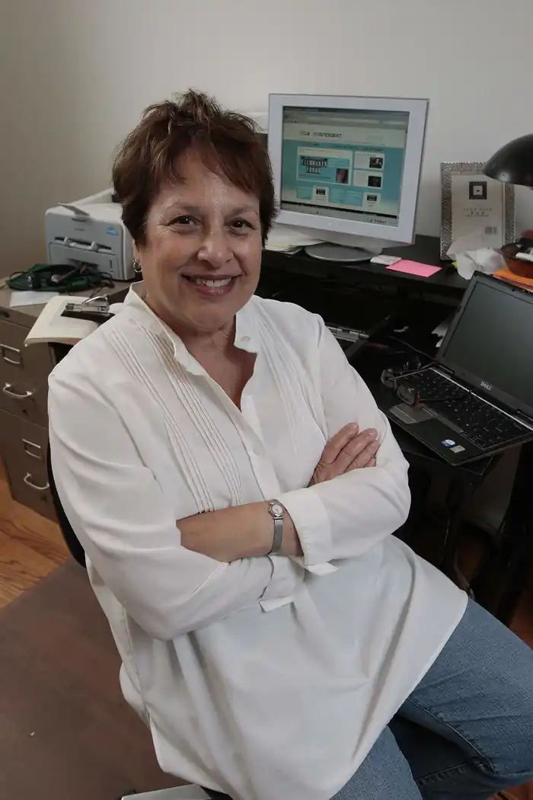

Шеррі Бет Ортнер (народився 19 вересня 1941) є американським культурним антропологом і була Видатним професором антропології в UCLA з 2004.
біографія
Ортнер ріс в єврейській родині в Ньюарку, Нью-Джерсі, і навчався в Середній школі Weequahic, також, як і Філіп Рот і Річі Робертс. Вона отримала свій B.A. від Брін-Мор-Коледжу в 1962. Вона тоді вивчила антропологію в Чиказькому університеті з Клиффордом МІРЦ і отримала її доктора філософії в антропології в 1970 для її польових досліджень серед Sherpas в Непалі. Вона викладала в Коледжі Сари Лоуренс, Мічиганському університеті, Каліфорнійському університеті, Берклі, Колумбійському університеті і Каліфорнійському університеті, Лос-Анджелес. Вона зробила великі польові дослідження з Sherpas Непалу, на релігії, політиці та участі Шерпа в гімалайському альпінізмі. Її заключна книга по Sherpas, Життя і Смерті на Mt. Еверест, був присуджений приз Дж.І. СТЕЛ за кращу книгу з антропології 2004. На початку 1990-х, Ортнер змінила центр її дослідження в Сполучені Штати. Її перший проект був на значеннях і роботі "класу" в Сполучених Штатах, використовуючи її власну середню школу, дипломуються клас як її етнографічні предмети. Її нова книга стосується відносин між голлівудськими фільмами і американською культурою. Вона також регулярно видає в областях культурної теорії і феміністської теорії. У 1990 Шеррі Ортнер була надана грант "Генія" Макартура. У 1992 вона була обрана людиною американської Академії Мистецтв і Наук. Вона була нагороджена Медаллю Retzius шведського Товариства Антропології та Географії. Ортнер була раніше одружена на Роберте Поле, культурному антрополога тепер в Університеті Еморі; і Реймонду К. Келлі, Заслуженому професору Антропології в Мічиганському університеті. Вона в даний час одружена на Тімоті Д. Тейлор, професора Ethnomusicology і Musicology в UCLA.